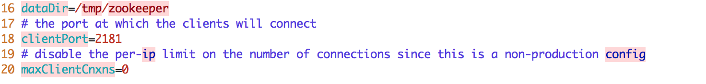

{{appName}}
Gift from folks at LinkedIn
- Messaging System
- Storage System
- Stream Processing System
Architecture

- Best of two models: queuing and publish-subscribe
- Strength of queuing : allowing to divide up the processing of data over multiple consumer instances to scale the processing
- Weakness of queuing : Not a multi-subscriber. Once one process/consumer reads the data it's gone!
- Strength of pub-sub: Allows to broadcast data to multiple processes
- Weakness of pub-sub: Has no way of scaling processing: Every message goes to every subscriber
Best of both worlds
- Consumer Groups
- Partitions
- The consumer group concept in Kafka helps to acheive this
- As in queuing: consumer group feature allows to divide up processing over a collection of processes : members of the consumer group
- As in pub-sub: Kafka broadcasts messages to multiple consumer groups
- With this, Kafka can scale processing and also supports multi-subscriber
- Supports parallel consumption with the Partitions
Parallel consumption

- Assigning the partitions in the topic to the consumers in the consumer group
- So each partition is consumed by exactly one consumer in the consumer group.
- Number of consumer instances in a consumer group = Number of partitions
Storage System
- Data written to Kafka is written to disk and replicated for fault-tolerance
- Producers to wait on acknowledgement so that a write isn't considered complete until it is fully replicated
- Special purpose distributed filesystem dedicated to:
high-performance low-latency commit log storage replication propagation
Stream Processing
- Takes continual streams of data from input topics
- Performs some processing on this input
- Produces continual streams of data to output topics
- Example: retail application takes in input streams of sales and shipments
and output a stream of reorder and price adjustments computed off this data
- Uses the producer and consumer APIs for input
- Has stateful storage
- Uses the consumer group mechanism for fault tolerance among the stream processor instances
Stream Processing - past and future data

- Enterprise messaging system allows processing future messages that will arrive after you subscribe
- A distributed file system like HDFS allows storing static files for batch processing - Allows storing and processing historical data from the past
- With Kafka by combining storage and low-latency subscriptions, streaming applications can treat both past and future data the same way
Kafka uses Apache ZooKeeper
ZooKeeper is Centralized service for maintaining:
- Configuration information
- Naming
- Providing distributed synchronization and group services
Video: Apache Kafka and the Stream Data Platform - Jay Kreps - team built Kafka
Video: Stanford Seminar - I ♥ Logs: Apache Kafka, Stream Processing, and Real-time Data
Video: ACM: Putting Apache Kafka to Use for Event Streams, Jay Kreps
Setup - Starting ZooKeeper Server

Setup - Kafka Server Config

Setup - Kafka Server Starting

Simple Demo - Producer on left and Consumer on right

Advantages of Message based async integration
Key Ideas - Data/Journal Logs - programmatic access
- Write-ahead logs or commit logs or transaction logs
- Logs are heart of many distributed data systems, data integration and real-time application architectures.
- Append-only, totally-ordered sequence of records ordered by time
- Records what happened and when.
- The ordering of records defines a notion of "time" since entries to the left are defined to be older then entries to the right.
- The log entry number can be thought of as the "timestamp" of the entry.
- database uses a log to write out information about the records they will be modifying, before applying the changes to all the various data structures it maintains.
- Since the log is immediately persisted it is used as the authoritative source in restoring all other persistent structures in the event of a crash.
- The use of logs as a mechanism for data subscription seems to have arisen almost by chance - supporting messaging, data flow, and real-time data processing
- The two problems a log solves: ordering changes and distributing data
Key Ideas - Logs - contd.
- If you feed two deterministic pieces of code the same input log, they will produce the same output.
- You can reduce the problem of making multiple machines all do the same thing to the problem of implementing a distributed consistent log to feed these processes input.
- Time-stamps that index the log now act as the clock for the state of the replicas